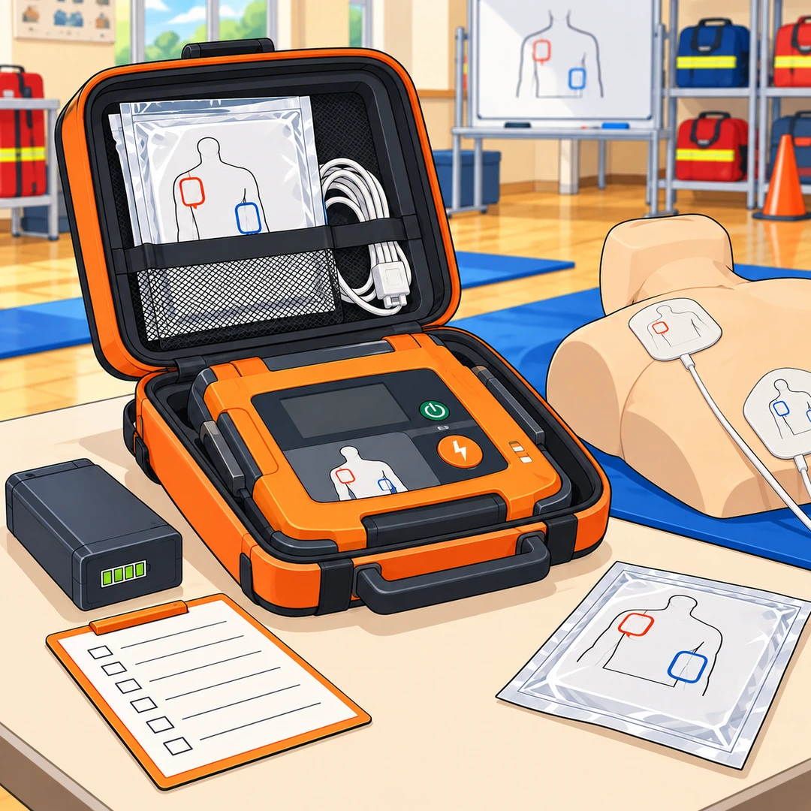

AEDと除細動関連資器材
読む目安：約3分

画像をタップすると拡大できます
私は、AED。
心電図を解析し、必要と判断された場合に電気ショックを行う自動体外式除細動器です。救急隊員の行う応急処置等の基準にも、AEDによる除細動が示されています。いざというときに使える状態を保つ準備は、出動前の点検から始まっています。[2]
出動前、まず収納を確認
本体が定位置に固定され、電極パッドやケーブルなど必要なものがそろっているかを確認します。電源表示や自己診断の状態、バッテリーの装着・残量、ケーブルやコネクターの傷・ゆるみは、配備機種の取扱説明書と所属の点検要領に沿って確認しましょう。消防庁は、AEDの日常点検の徹底や、取扱説明書に基づくバッテリーチェック、ケーブル点検を求めています。[1]
パッドとバッテリーは期限を記録
電極パッドの使用期限、包装の状態、バッテリーの使用期限や交換時期を確認します。期限や表示位置は製品ごとに異なるため、機器本体・包装の表示と取扱説明書を確認し、一覧表や管理ラベルに交換日を記録します。使用後のパッドは再使用せず、製品の指示に従って交換します。予備品の保管場所と補充の担当も、隊内で共有しておきましょう。[3]
点検は、方法と記録をそろえる
日常点検では、表示、警告の有無、本体やケーブルの外観、パッドとバッテリーの期限を確認します。自己診断や作動確認の方法は機種によって異なるため、独自の方法を加えず、取扱説明書に記載された方法で行います。点検日、担当者、交換・異常の内容を記録し、異常時の連絡先や予備品の使い方も確認しておきましょう。消防庁は、定期的な保守点検計画の策定と実施を示しています。[1]
訓練で、使える状態を確かめる
本体の操作だけでなく、電極パッドやケーブルの接続、エラー表示が出たときの対応、予備バッテリーへの交換などを、定期的な研修・訓練で確認します。訓練では訓練用機器を使い、実機の保守点検や訓練の進め方は、製造販売業者の案内と所属の計画に合わせます。[1]
私から、隊へ
本体だけでなく、パッド、バッテリー、ケーブルまで。
期限と状態を確かめ、点検する人、記録する人、異常を知らせる方法を共有する。日々の確認と訓練を重ねて、必要なときに使える準備を整えておきます。